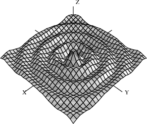
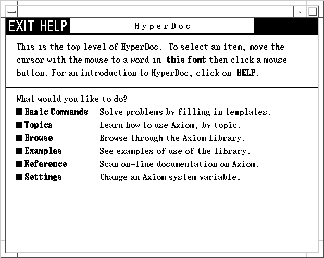

0.1 Introduction to FriCAS¶
Welcome to the world of FriCAS. We call FriCAS a scientific computation system: a self-contained toolbox designed to meet your scientific programming needs, from symbolics, to numerics, to graphics.
This introduction is a quick overview of what FriCAS offers.
0.1.1 Symbolic Computation¶
FriCAS provides a wide range of simple commands for symbolic mathematical problem solving. Do you need to solve an equation, to expand a series, or to obtain an integral? If so, just ask FriCAS to do it.
Given
we would enter this into FriCAS as:
integrate(1/(x^3 * (a+b*x)^(1/3)),x)
which would give the result:
Type: Union(Expression Integer,...)
FriCAS provides state-of-the-art algebraic machinery to handle your most advanced symbolic problems. For example, FriCAS’s integrator gives you the answer when an answer exists. If one does not, it provides a proof that there is no answer. Integration is just one of a multitude of symbolic operations that FriCAS provides.
0.1.2 Numeric Computation¶
FriCAS has a numerical library that includes operations for linear algebra, solution of equations, and special functions. For many of these operations, you can select any number of floating point digits to be carried out in the computation.
Solve \(x^{49} - 49x^{4} + 9\) to 49 digits of accuracy. First we need to change the default output length of numbers:
digits(49)
and then we execute the command:
solve(x^49-49*x^4+9 = 0,1.e-49)
Type: List Equation Polynomial Float
The output of a computation can be converted to FORTRAN to be used in a later numerical computation. Besides floating point numbers, FriCAS provides literally dozens of kinds of numbers to compute with. These range from various kinds of integers, to fractions, complex numbers, quaternions, continued fractions, and to numbers represented with an arbitrary base.
What is \(10\) to the \(90\)-th power in base \(32\)?
radix(10^90,32)
returns:
FMM3O955CSEIV0ILKH820CN3I7PICQU0OQMDOFV6TP000000000000000000
Type: RadixExpansion 32
0.1.3 Graphics¶
You may often want to visualize a symbolic formula or draw a graph from a set of numerical values. To do this, you can call upon the FriCAS graphics capability.
Draw \(J_{0}\left( \sqrt{x^{2} + y^{2}} \right)\) for \(- 20 \leq x,y \leq 20\).
draw(5*besselJ(0,sqrt(x^2+y^2)), x=-20..20, y=-20..20)

\(J_{0}\left( \sqrt{x^{2} + y^{2}} \right)\) for \(- 20 \leq x,y \leq 20\)
Graphs in FriCAS are interactive objects you can manipulate with your mouse. Just click on the graph, and a control panel pops up. Using this mouse and the control panel, you can translate, rotate, zoom, change the coloring, lighting, shading, and perspective on the picture. You can also generate a PostScript copy of your graph to produce hard-copy output.
0.1.4 HyperDoc¶

Hyperdoc opening menu
HyperDoc presents you windows on the world of FriCAS, offering on-line help, examples, tutorials, a browser, and reference material. HyperDoc gives you on-line access to this document in a hypertext format. Words that appear in a different font (for example, Matrix, factor, and category) are generally mouse-active; if you click on one with your mouse, HyperDoc shows you a new window for that word.
As another example of a HyperDoc facility, suppose that you want to compute the roots of \(x^{49} - 49x^{4} + 9\) to 49 digits (as in our previous example) and you don’t know how to tell FriCAS to do this. The basic command facility of HyperDoc leads the way. Through the series of HyperDoc windows shown in Figure fig-intro-br and the specified mouse clicks, you and HyperDoc generate the correct command to issue to compute the answer.
0.1.5 Interactive Programming¶
FriCAS’s interactive programming language lets you define your own functions. A simple example of a user-defined function is one that computes the successive Legendre polynomials. FriCAS lets you define these polynomials in a piece-wise way.
The first Legendre polynomial.
p(0) == 1
Type: Void
The second Legendre polynomial.
p(1) == x
Type: Void
The \(n\)-th Legendre polynomial for \(\left( n > 1 \right)\).
p(n) == ((2*n-1)*x*p(n-1) - (n-1) * p(n-2))/n
Type: Void
In addition to letting you define simple functions like this, the interactive language can be used to create entire application packages. All the graphs in the FriCAS images section were created by programs written in the interactive language.
The above definitions for \(p\) do no computation—they simply tell FriCAS how to compute \(p\left( k \right)\) for some positive integer \(k\).
To actually get a value of a Legendre polynomial, you ask for it. Legendre polynomials
What is the tenth Legendre polynomial?
p(10)
Compiling function p with type Integer -> Polynomial Fraction
Integer
Compiling function p as a recurrence relation.
Type: Polynomial Fraction Integer
FriCAS applies the above pieces for \(p\) to obtain the value of \(p\left( 10 \right)\). But it does more: it creates an optimized, compiled function for \(p\). The function is formed by putting the pieces together into a single piece of code. By compiled, we mean that the function is translated into basic machine-code. By optimized, we mean that certain transformations are performed on that code to make it run faster. For \(p\), FriCAS actually translates the original definition that is recursive (one that calls itself) to one that is iterative (one that consists of a simple loop).
What is the coefficient of \(x^{90}\) in \(p\left( 90 \right)\)?
coefficient(p(90),x,90)
Type: Polynomial Fraction Integer
In general, a user function is type-analyzed and compiled on first use. Later, if you use it with a different kind of object, the function is recompiled if necessary.
0.1.6 Data Structures¶
A variety of data structures are available for interactive use. These include strings, lists, vectors, sets, multisets, and hash tables. A particularly useful structure for interactive use is the infinite stream:
Create the infinite stream of derivatives of Legendre polynomials.
[D(p(i),x) for i in 1..]
Type: Stream Polynomial Fraction Integer
Streams display only a few of their initial elements. Otherwise, they are lazy: they only compute elements when you ask for them.
Data structures are an important component for building application software. Advanced users can represent data for applications in optimal fashion. In all, FriCAS offers over forty kinds of aggregate data structures, ranging from mutable structures (such as cyclic lists and flexible arrays) to storage efficient structures (such as bit vectors). As an example, streams are used as the internal data structure for power series.
What is the series expansion of \(\log\left( \cot\left( x \right) \right)\) about \(x = \pi/2\)?
series(log(cot(x)),x = %pi/2)
Type: GeneralUnivariatePowerSeries(Expression Integer,x,pi/2)
Series and streams make no attempt to compute all their elements! Rather, they stand ready to deliver elements on demand.
What is the coefficient of the \(50\)-th term of this series?
coefficient(%,50)
Type: Expression Integer
0.1.7 Mathematical Structures¶
FriCAS also has many kinds of mathematical structures. These range from simple ones (like polynomials and matrices) to more esoteric ones (like ideals and Clifford algebras). Most structures allow the construction of arbitrarily complicated types.
Even a simple input expression can result in a type with several levels.
matrix [ [x + %i,0], [1,-2] ]
Type: Matrix Polynomial Complex Integer
The FriCAS interpreter builds types in response to user input. Often, the type of the result is changed in order to be applicable to an operation.
The inverse operation requires that elements of the above matrices are fractions.
inverse(%)
Type: Union(Matrix Fraction Polynomial Complex Integer,...)
0.1.8 Pattern Matching¶
A convenient facility for symbolic computation is pattern matching. Suppose you have a trigonometric expression and you want to transform it to some equivalent form. Use a \(rule\) command to describe the transformation rules you rule need. Then give the rules a name and apply that name as a function to your trigonometric expression.
Introduce two rewrite rules.
sinCosExpandRules := rule
sin(x+y) == sin(x)*cos(y) + sin(y)*cos(x)
cos(x+y) == cos(x)*cos(y) - sin(x)*sin(y)
sin(2*x) == 2*sin(x)*cos(x)
cos(2*x) == cos(x)^2 - sin(x)^2
{sin(y + x) == cos(x)sin(y) + cos(y)sin(x),
cos(y + x) == - sin(x)sin(y) + cos(x)cos(y),
sin(2x) == 2cos(x)sin(x),
2 2
cos(2x) == - sin(x) + cos(x) }
Type: Ruleset(Integer,Integer,Expression Integer)
Apply the rules to a simple trigonometric expression.
sinCosExpandRules(sin(a+2*b+c))
Type: Expression Integer
Using input files, you can create your own library of transformation rules relevant to your applications, then selectively apply the rules you need.
0.1.9 Polymorphic Algorithms¶
All components of the FriCAS algebra library are written in the FriCAS library language. This language is similar to the interactive language except for protocols that authors are obliged to follow. The library language permits you to write polymorphic algorithms, algorithms defined to work in their most natural settings and over a variety of types.
Define a system of polynomial equations \(S\).
S := [3*x^3 + y + 1 = 0,y^2 = 4]
Type: List Equation Polynomial Integer
Solve the system \(S\) using rational number arithmetic and 30 digits of accuracy.
solve(S,1/10^30)
Type: List List Equation Polynomial Fraction Integer
Solve \(S\) with the solutions expressed in radicals.
radicalSolve(S)
Type: List List Equation Expression Integer
While these solutions look very different, the results were produced by the same internal algorithm! The internal algorithm actually works with equations over any field. Examples of fields are the rational numbers, floating point numbers, rational functions, power series, and general expressions involving radicals.
0.1.10 Extensibility¶
Users and system developers alike can augment the FriCAS library, all using one common language. Library code, like interpreter code, is compiled into machine binary code for run-time efficiency.
Using this language, you can create new computational types and new algorithmic packages. All library code is polymorphic, described in terms of a database of algebraic properties. By following the language protocols, there is an automatic, guaranteed interaction between your code and that of colleagues and system implementers.